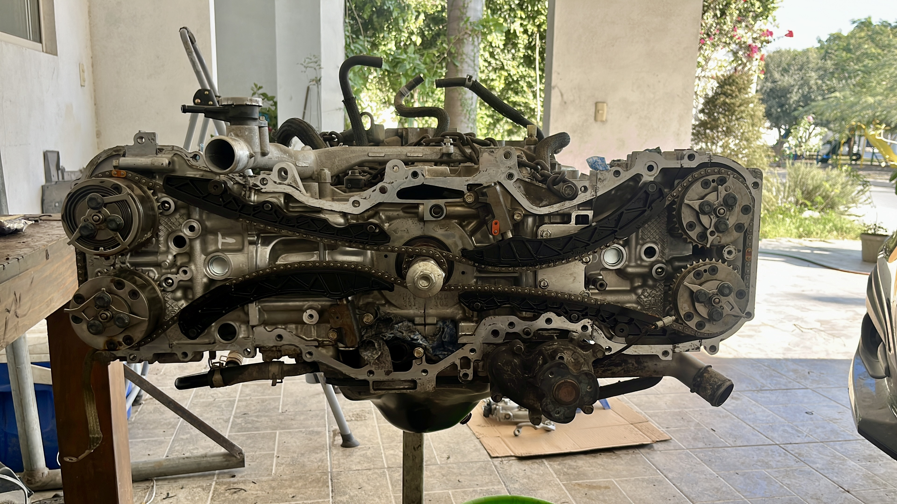
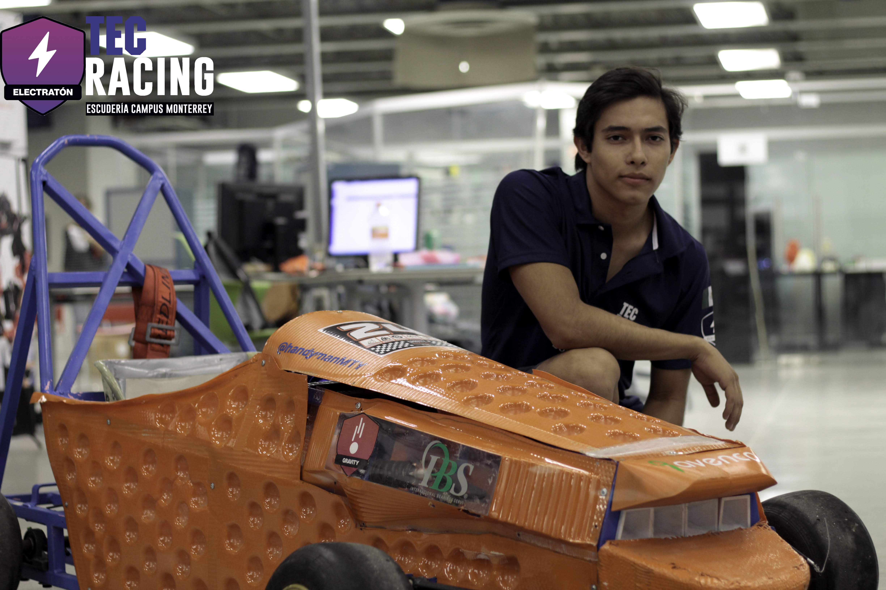
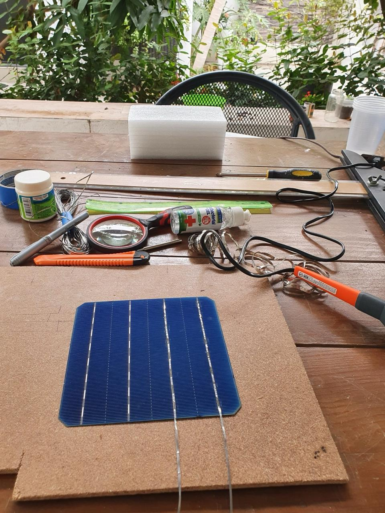
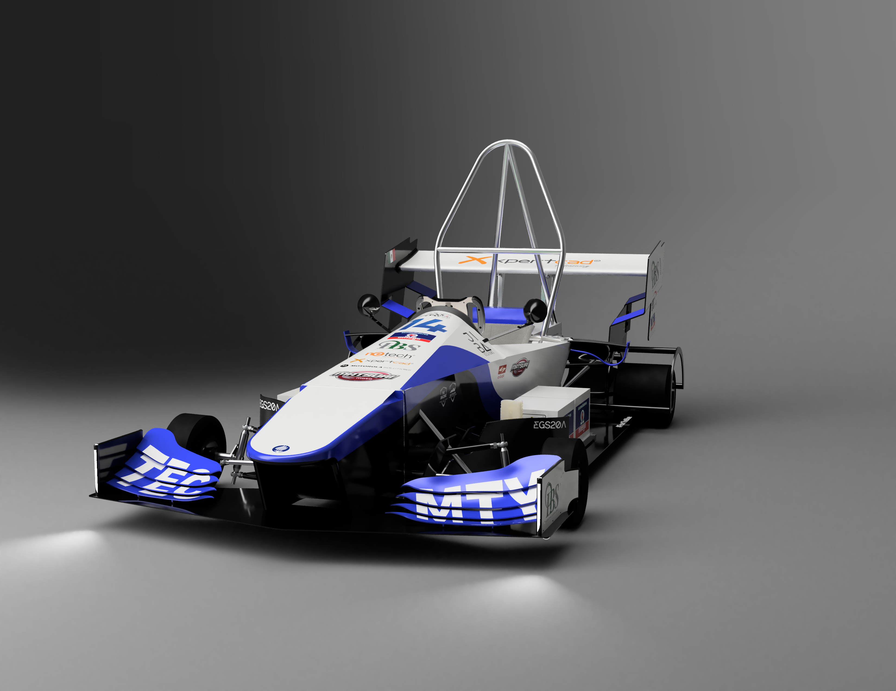

🔧 Mechanical Engineer
Pablo Cruz
I design, build and troubleshoot machines — from engines and drivetrains to automated machinery. Hands-on, CAD-driven and obsessed with reliability and performance.

Powertrain & Engines
Engine repair, diagnostics, reliability.
CAD & Simulation
SolidWorks, Creo, FEA for real builds.
About me
Mechanical engineer focused on building and improving real machines — cars, engines and automated systems — with a mix of design, fabrication and field diagnostics.
I’m Pablo Cruz, a mechanical engineer from México with a strong focus on hands-on engineering. I enjoy the full lifecycle of a build: from CAD and simulation to fabrication, testing and troubleshooting on the floor.
My experience spans industrial automation, LiDAR-based systems, and mechanical design, as well as engine repair and performance-oriented projects. Under the Monte Cruz vision, I aim to design and build machines with soul — rally-inspired cars, adventure vehicles and purpose-driven engineering projects.
B.S. Mechanical Engineering – Tecnológico de Monterrey
SolidWorks certifications
Gasoline engine repair certificate
Field service & automation experience
Projects
Selected builds and engineering work where I combine CAD, fabrication and real-world testing. Each project has its own technical breakdown.

Hydraulic Leak Troubleshooting & Failure Pattern Analysis
View project details

75W Custom-Built Solar Panel
View project detailsLGVs Diagnostics & Validation
View project details

EV battery housing re-design
View project detailsFixture design
View project detailsBuilds & media
A few snapshots of engines, parts and builds I’m working on. Soon I’ll be sharing more detailed videos and breakdowns on my YouTube channel.

Engine teardown – labeling, organizing and cleaning parts.

Welding practice – brackets / small structures for future builds.

CAD model – component designed in SolidWorks for a mechanical system.

Workshop setup – tools, engines and parts ready for work.
Featured build video
I plan to document future builds (engine projects, suspension concepts, adventure vehicles) in video format. Here I’ll feature one key video and keep the rest linked from my channel.
Once my channel is live, this section will point directly to a playlist focused on hands-on engineering builds and field work.
Skills
A mix of mechanical, CAD/CAE and automation skills backed by real-world work: engines, drivetrains, machinery and sensors.
Mechanical / Hands-on
Aquí puedes sustituir esta tarjeta por una galería de fotos soldando, armando motores, etc.
CAD & Simulation
Ideal para mostrar renders de chasis, subframes, brackets, etc.
Automation & Sensors
Basado en tu experiencia en AV Flexologic / Elettric 80.
Skills in action
A few photos that show my hands-on skills: welding, engine work and mechanical assembly.

Welding practice – brackets and small structures.

Engine assembly – focusing on clean and organized work.

3D CAD model – component designed in SolidWorks.
Experience
Professional roles where I apply mechanical design, automation and troubleshooting to real industrial systems.
Service & Support Engineer
AV Flexologic
Jun 2025 – Present
- Diagnosis and troubleshooting of flexographic plate mounting machines.
- Work with sensors and automation to solve on-site issues.
- Coordinate spare parts, upgrades and technical recommendations with customers.
Automation /Field Service Engineer
Elettric 80 - Wytheville, VA
2024 – 2025
- Maintenance & reliability for LGVs and automated systems in beverage and food plants.
- PLC, electronics and sensors troubleshooting in demanding industrial environments.
- Hydraulics and mechanical maintenance and troubleshooting.
Mechanical Design Intern
John Deere
2022 – 2024
- CAD design of mechanical components for agricultural machinery.
- Assistance in integration, routing and assembly documentation.
Feel free to reach out.
Open to roles where I can design, build and improve machines — especially in automotive, motorsport, aerospace and heavy machinery.
If you want a deeper technical breakdown of any project, I can share detailed PDFs, additional CAD models and test notes on request.